Chapter Objectives
Source: Chapter 6, pages 380–383 · Sections 6–1 and the beginning of Nusselt Number · Solved Example 6–1
1.1 Chapter Objectives
في نهاية هذا الشابتر، المفروض تكون قادرًا على تحقيق الأهداف التالية، كما يحددها المرجع:
- فهم Physical Mechanism of Convection وتصنيفاته.
- تخيل كيفية تطور Velocity Boundary Layer وThermal Boundary Layer أثناء جريان المائع فوق الأسطح.
- فهم Dimensionless Numbers: Reynolds Number وPrandtl Number وNusselt Number.
- التمييز بين Laminar Flow وTurbulent Flow وفهم آليات Momentum Transfer وHeat Transfer في الجريان المضطرب.
- اشتقاق Differential Equations التي تحكم Convection باستخدام Mass, Momentum, and Energy Balances، وحلها لبعض الحالات البسيطة مثل Laminar Flow over a Flat Plate.
- تحويل معادلات Convection إلى Dimensionless Form واستخراج العلاقات الوظيفية الخاصة بـ Friction Coefficient وHeat Transfer Coefficient.
- استخدام Analogies between Momentum and Heat Transfer لتحديد Heat Transfer Coefficient من معرفة Friction Coefficient.
ملاحظة: هذه أهداف الشابتر كاملة كما ظهرت في الصفحات المرسلة، لكنها ليست كلها موضوعات الدفعة الحالية؛ سنشرح ما تدعمه الصفحات التي أرسلتها فقط.
Definition and Classification of Convection
1.2.1 The Three Basic Mechanisms of Heat Transfer
ذكر المرجع ثلاثة Basic Mechanisms of Heat Transfer:
- Conduction
- Convection
- Radiation
الفرق الأساسي الذي نحتاج إلى فهمه هنا هو الفرق بين Conduction وConvection.
Conduction هو انتقال الطاقة الحرارية نتيجة وجود Temperature Gradient، دون الحاجة إلى حركة كلية للمائع. يحدث في المواد الصلبة، كما يمكن أن يحدث في السوائل والغازات.
Convection هو انتقال الحرارة خلال مائع في وجود Bulk Fluid Motion، أي حركة كلية للمائع تنقل الطاقة من مكان إلى آخر.
أما Radiation فهو انتقال الطاقة عن طريق Electromagnetic Waves، ولا يحتاج إلى وجود Material Medium.
النقطة المهمة في بداية الشابتر هي أن Convection لا يلغي Conduction؛ بل إن Convection يجمع بين تأثير حركة المائع وانتقال الحرارة بالتوصيل داخل المائع.
1.2.2 Why Conduction and Convection Are Different
في الـ Solid، تظل الجزيئات في مواضع شبه ثابتة، لذلك يكون انتقال الحرارة خلال المادة الصلبة بواسطة Conduction.
أما في الـ Liquid أو Gas، فهناك احتمالان:
- إذا كان المائع ساكنًا، فإن انتقال الحرارة خلاله يكون بواسطة Conduction.
- إذا كان المائع يتحرك حركة كلية، فإن انتقال الحرارة يكون بواسطة Convection، مع استمرار حدوث Conduction داخل المائع.
إذًا، وجود Fluid Motion هو العامل الذي يميز Convection عن Conduction داخل المائع.
ولهذا يذكر المرجع أن Conduction in a Fluid can be Viewed as the Limiting Case of Convection عندما يكون المائع ساكنًا، أي Quiescent Fluid.
1.2.3 Classification of Convection
يوضح المرجع تصنيفين أساسيين لـ Convection.
A. Based on How Fluid Motion Is Initiated
Forced Convection
تحدث عندما يتم دفع المائع بواسطة وسيلة خارجية، مثل Pump أو Fan، ليجري فوق Surface أو داخل Pipe.
Natural Convection (Free Convection)
تحدث عندما تنشأ حركة المائع طبيعيًا نتيجة Buoyancy Effect؛ فالمائع الدافئ يرتفع والمائع الأبرد يهبط.
B. Based on Where Fluid Flows
- External Convection: عندما يجري المائع فوق سطح، مثل الهواء الذي يمر فوق Plate.
- Internal Convection: عندما يجري المائع داخل Pipe أو قناة محاطة بحدود صلبة.
لاحظ أن التصنيفين مستقلان؛ فقد تكون الحالة Forced External Convection، مثل Fan يمرر الهواء فوق سطح ساخن، أو Forced Internal Convection، مثل Pump يدفع الماء داخل Pipe.
كذلك، يمكن أن تحدث Natural Convection حول سطح ساخن عندما تسبب فروق الكثافة الناتجة عن اختلاف درجات الحرارة حركة المائع.
Figure 6–1: يعرض المرجع مقارنة بين Forced Convection وNatural Convection وConduction دون Convection Currents. الفكرة هي التمييز بين انتقال الحرارة مع حركة المائع وانتقالها خلال مائع لا توجد به حركة كلية.
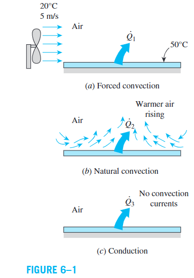
The Physical Mechanism of Convection
1.3.1 Why Fluid Motion Enhances Heat Transfer
عندما يتحرك المائع، فإنه ينقل أجزاءً من المائع ذات درجات حرارة مختلفة إلى مواقع جديدة. هذا يزيد من عدد المناطق التي يحدث عندها تبادل للطاقة، ويزيد من فاعلية انتقال الحرارة مقارنةً بحالة المائع الساكن.
المرجع يوضح أن حركة المائع تجلب أجزاءً أكثر دفئًا وأخرى أبرد إلى التلامس، فتزداد فرص حدوث Conduction بمعدلات أعلى داخل المائع.
بالتالي:
- عند غياب Bulk Fluid Motion، يكون انتقال الحرارة خلال المائع بالتوصيل.
- عند وجود Fluid Motion، تضاف آلية نقل الطاقة بواسطة حركة المائع.
- عند زيادة Fluid Velocity، يزداد معدل Heat Transfer عادةً، مع ثبات العوامل الأخرى ذات الصلة.
1.3.2 Heat Transfer Between Two Parallel Plates
تخيل وجود مائع بين لوحين متوازيين:
- Hot Plate عند درجة حرارة مرتفعة.
- Cold Plate عند درجة حرارة منخفضة.
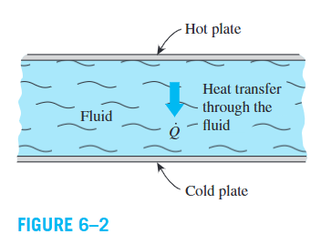
Case 1: Fluid at Rest
عندما يكون المائع ساكنًا، تنتقل الطاقة من جزيئات المائع الأقرب إلى Hot Plate إلى الطبقات المجاورة الأقل حرارة، ثم إلى الطبقات التالية، حتى تصل الطاقة إلى Cold Plate.
هذه هي آلية Conduction through a Fluid.
Case 2: Fluid Motion
يقترح المرجع تخيل استخدام Syringe لسحب بعض المائع الدافئ القريب من Hot Plate، ثم حقنه قرب Cold Plate بصورة متكررة.
في هذه الحالة، لا تنتقل الطاقة بالتوصيل من طبقة إلى الطبقة التالية فقط، بل تنقل حركة المائع جزءًا من الطاقة مباشرةً نحو الجانب البارد.
هذه الصورة الذهنية تشرح لماذا يكون انتقال الحرارة بواسطة Convection أكثر فاعلية من Conduction وحده في كثير من الحالات.
1.3.3 Practical Example: Cooling a Hot Block
إذا كان لدينا Hot Block يبرد بفعل الهواء المار فوق سطحه، فإن زيادة سرعة Fan تساعد على تبريده بمعدل أكبر.
وإذا استُبدل الهواء بالماء في ظروف مناسبة، فقد يزداد Heat Transfer بصورة أكبر بسبب اختلاف الخصائص الحرارية للمائع.
لكن لا ينبغي اعتبار Fluid Velocity العامل الوحيد المحدد لـ Convection؛ فالنتيجة تعتمد أيضًا على خصائص المائع وهندسة السطح ونوع الجريان.
1.3.4 Variables Affecting Convection Heat Transfer
يحدد المرجع مجموعة من العوامل التي تؤثر في Convection:
| Factor | Symbol | Physical significance |
|---|---|---|
| Dynamic Viscosity | \(\mu\) | تؤثر في اللزوجة ومقاومة المائع للتشوه الحركي. |
| Thermal Conductivity | \(k\) | تقيس قدرة المائع على توصيل الحرارة. |
| Density | \(\rho\) | تمثل الكتلة لكل وحدة حجم. |
| Specific Heat | \(c_p\) | تمثل الطاقة اللازمة لرفع درجة حرارة وحدة الكتلة درجة واحدة عند ضغط ثابت. |
| Fluid Velocity | \(V\) | تؤثر في حركة المائع ومعدل نقل الطاقة. |
| Surface Geometry | — | تؤثر في شكل الجريان وتطوره. |
| Surface Roughness | — | قد تؤثر في طبيعة الجريان وانتقال الحرارة. |
| Type of Flow | — | مثل Laminar Flow أو Turbulent Flow. |
وحدات هذه الخصائص في النظام الدولي:
- \(\mu\): \(\mathrm{Pa\cdot s}\)
- \(k\): \(\mathrm{W/(m\cdot K)}\)
- \(\rho\): \(\mathrm{kg/m^3}\)
- \(c_p\): \(\mathrm{J/(kg\cdot K)}\)
- \(V\): \(\mathrm{m/s}\)
لهذا السبب يصف المرجع Convection بأنه أكثر آليات Heat Transfer تعقيدًا؛ لأن معدل انتقال الحرارة يعتمد على عدة متغيرات مترابطة.
Newton’s Law of Cooling
يذكر المرجع أن معدل Convection Heat Transfer يتناسب مع Temperature Difference بين السطح والمائع البعيد عن السطح.
وتُكتب العلاقة على الصورة التالية.
1.4.1 Heat Flux Equation
حيث:
| Symbol | Definition | SI Unit |
|---|---|---|
| \(\dot q_{\mathrm{conv}}''\) | Convective Heat Flux | \(\mathrm{W/m^2}\) |
| \(h\) | Convection Heat Transfer Coefficient | \(\mathrm{W/(m^2\cdot K)}\) |
| \(T_s\) | Surface Temperature | \(^\circ\mathrm C\) |
| \(T_\infty\) | Fluid Temperature sufficiently far from the surface | \(^\circ\mathrm C\) |
الرمز \(T_\infty\) يمثل درجة حرارة المائع بعيدًا عن السطح، حيث لا يتأثر مباشرةً بتغيرات درجة الحرارة القريبة من السطح. والرمز \(\infty\) هنا لا يعني أن درجة الحرارة لا نهائية، وإنما يشير إلى المنطقة البعيدة عن السطح.
أما \(T_s\) فهي درجة حرارة السطح الصلب نفسه.
1.4.2 Total Heat Transfer Rate
عندما نريد حساب معدل انتقال الحرارة الكلي خلال مساحة سطحية \(A_s\)، نستخدم:
حيث:
- \(\dot Q_{\mathrm{conv}}\): Total Convective Heat Transfer Rate، بوحدة \(\mathrm W\).
- \(A_s\): Heat Transfer Surface Area، بوحدة \(\mathrm{m^2}\).
- \(h\): Convection Heat Transfer Coefficient.
- \(T_s-T_\infty\): Temperature Difference بين السطح والمائع البعيد.
الفرق بين المعادلتين هو أن Equation (6–1) تعطي Heat Transfer Rate لكل وحدة مساحة، بينما Equation (6–2) تعطي معدل انتقال الحرارة خلال المساحة كلها.
1.4.3 Physical Interpretation
افترض أن لدينا سطحًا ساخنًا في هواء أبرد منه.
إذا كانت:
فإن:
وفقًا لاتفاقية الإشارة في المعادلة، أي إن الحرارة تنتقل من السطح إلى المائع.
أما إذا كان:
فإن Heat Flux يصبح سالبًا، ما يعني أن اتجاه انتقال الحرارة الفعلي معاكس للاتجاه الموجب المفترض: من المائع إلى السطح.
وتوضح المعادلة أنه عند ثبات \(h\) ودرجة حرارة المائع، فإن زيادة Temperature Difference تؤدي إلى زيادة Heat Flux بالتناسب نفسه.
مثلًا، إذا تضاعف فرق درجة الحرارة مع ثبات \(h\)، فإن Heat Flux يتضاعف.
Important: لا يعني الشكل البسيط للمعادلة أن حساب \(h\) بسيط؛ فالمرجع يؤكد أن \(h\) يعتمد على خصائص المائع وسرعته وهندسة السطح ونوع الجريان وعوامل أخرى.
The No-Slip Condition
1.5.1 Definition
عندما يتحرك Fluid بجوار Solid Surface ثابت وغير منفذ للمائع، تُظهر الملاحظات التجريبية أن المائع الملامس مباشرةً للسطح تكون سرعته النسبية بالنسبة إلى السطح مساوية للصفر.
تُسمى هذه الظاهرة No-Slip Condition.
إذا كان السطح ثابتًا:
أما إذا كان السطح يتحرك، فإن المائع الملامس له يمتلك السرعة نفسها للسطح.
على سبيل المثال، إذا تحركت Plate بسرعة \(U\)، فإن سرعة طبقة المائع الملامسة لها تساوي \(U\)، وفقًا لـ No-Slip Condition.
1.5.2 How Does a Velocity Gradient Develop?
تخيّل مائعًا يقترب من سطح بسرعة منتظمة \(V\).
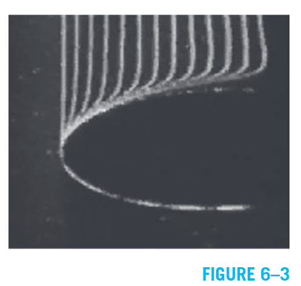
- طبقة المائع الملامسة للسطح الثابت تتوقف بالنسبة إلى السطح.
- تؤثر اللزوجة في الطبقة المجاورة، فتقل سرعتها مقارنةً بالمائع الأبعد.
- تنتقل آثار اللزوجة إلى الطبقات التالية، فتتكون فروق في السرعة بين طبقات المائع.
نتيجة ذلك، يتكون Velocity Profile بدلًا من بقاء سرعة المائع متساوية في جميع النقاط.
1.5.3 Boundary Layer
تُسمى المنطقة القريبة من الجدار التي تكون فيها Viscous Effects وVelocity Gradients مهمة Boundary Layer.
الخاصية الأساسية المسؤولة عن No-Slip Condition وتطور هذه المنطقة هي Viscosity.
يوضح الشكل الفرق بين:
- Uniform Approach Velocity \(V\): سرعة المائع قبل أن تتطور تأثيرات السطح بصورة ملحوظة.
- Relative Velocities of Fluid Layers: اختلاف سرعات طبقات المائع القريبة من السطح.
- Zero Velocity at the Surface: السرعة النسبية تساوي صفرًا عند السطح الثابت.
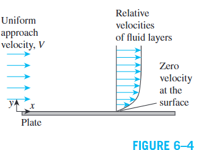
1.5.4 Surface Drag
من نتائج No-Slip Condition أيضًا ظهور Surface Drag، وهو القوة التي يؤثر بها المائع على السطح في اتجاه الجريان.
ينشأ هذا التأثير بسبب قوى اللزوجة المرتبطة بتغير السرعة بين طبقات المائع والسطح.
وهذا يوضح أن No-Slip Condition ليست مجرد شرط رياضي لحل المعادلات، بل لها نتائج عملية مهمة في Fluid Mechanics وHeat Transfer.
Conduction at the Wall and Convection
هذه من أهم الأفكار الفيزيائية في هذا الجزء من الشابتر.
1.6.1 Why Is Heat Transfer at the Wall by Pure Conduction?
طبقًا لـ No-Slip Condition، فإن المائع الملامس لسطح ثابت تكون سرعته النسبية مساوية للصفر عند السطح.
لذلك، يكون انتقال الحرارة من السطح الصلب إلى طبقة المائع الملامسة له بواسطة Conduction.
بعد انتقال الطاقة إلى المائع، تتولى حركة المائع نقلها بعيدًا عن السطح، وهي مرحلة مرتبطة بـ Convection.
إذًا، ما نسميه Convection Heat Transfer بين السطح والمائع هو، عند سطح التلامس نفسه، انتقال الحرارة بالتوصيل إلى الطبقة الملامسة، ثم نقل الطاقة بواسطة حركة المائع بعيدًا عن السطح.
1.6.2 Fourier’s Law at the Surface
يعرض المرجع معادلة Heat Flux عند السطح بالشكل التالي:
حيث:
- \(k_{\mathrm{fluid}}\): Thermal Conductivity of the Fluid، بوحدة \(\mathrm{W/(m\cdot K)}\).
- \(T\): Temperature Distribution داخل المائع.
- \(y\): المسافة العمودية على السطح.
- \(\left.\dfrac{\partial T}{\partial y}\right|_{y=0}\): Temperature Gradient عند السطح.
- الإشارة السالبة ناتجة عن Fourier’s Law، بحيث يتجه انتقال الحرارة بالتوصيل نحو انخفاض درجة الحرارة.
المعادلة تعني أن Heat Flux عند الجدار يتحدد من خلال Thermal Conductivity للمائع ومقدار Temperature Gradient عند السطح.
1.6.3 Derivation of the Convection Heat Transfer Coefficient
نبدأ من Newton’s Law of Cooling:
ومن Fourier’s Law عند السطح:
وبما أن Heat Flux من السطح إلى المائع يساوي Heat Flux بالتوصيل إلى طبقة المائع الملامسة، فإن:
بقسمة الطرفين على \(T_s-T_\infty\)، نحصل على:
هذه المعادلة تربط بين تعريف \(h\) من خلال Newton’s Law of Cooling وبين التوزيع الفعلي لدرجة الحرارة داخل المائع.
Physical meaning: كلما كان Temperature Gradient عند السطح أكبر في المقدار، كان Heat Flux أكبر عند ثبات Thermal Conductivity. وبالنسبة إلى فرق درجة الحرارة نفسه، يؤدي ذلك إلى قيمة أكبر لـ \(h\).
هذه النتيجة مهمة لأنها تبين أن \(h\) ليس خاصية ثابتة للمائع وحده، مثل Density أو Thermal Conductivity، بل هو معامل يتأثر بظروف الجريان ودرجة الحرارة وهندسة السطح.
1.6.4 Local and Average Convection Heat Transfer Coefficients
يشير المرجع إلى أن Convection Heat Transfer Coefficient قد يتغير على امتداد اتجاه الجريان، أي في اتجاه \(x\).
لذلك يمكن التمييز بين:
- Local Heat Transfer Coefficient \(h_x\): القيمة عند موضع معين على السطح.
- Average Heat Transfer Coefficient \(\bar h\): القيمة المتوسطة على كامل السطح.
عندما تتغير \(h_x\) من نقطة إلى أخرى، يجب حساب المتوسط بطريقة مناسبة على كامل المساحة.
للسطح ذي المساحة التفاضلية \(dA\)، تكون العلاقة المتوسطة:
هذه صيغة رياضية توضيحية لطريقة حساب المتوسط المساحي؛ وهي تفترض أن المتوسط المطلوب هو المتوسط على مساحة السطح. وإذا كانت \(h\) تتغير على طول سطح مستوٍ ذي عرض ثابت، فيمكن التعبير عن المتوسط باستخدام التكامل على طول السطح.
Nusselt Number
1.7.1 Definition
يستخدم المرجع Nusselt Number لتكوين كمية لا بُعدية ترتبط بـ Convection Heat Transfer Coefficient.
حيث:
| Symbol | Definition | SI Unit |
|---|---|---|
| \(Nu\) | Nusselt Number | Dimensionless |
| \(h\) | Convection Heat Transfer Coefficient | \(\mathrm{W/(m^2\cdot K)}\) |
| \(L_c\) | Characteristic Length | \(\mathrm m\) |
| \(k\) | Thermal Conductivity of the Fluid | \(\mathrm{W/(m\cdot K)}\) |
الرمز \(L_c\) يمثل Characteristic Length، أي طولًا مميزًا يناسب هندسة المسألة. ويجب اختيار هذا الطول وفقًا للتعريف المستخدم في المسألة أو العلاقة التجريبية المعنية.
1.7.2 Why Is Nusselt Number Dimensionless?
يمكن التحقق من الأبعاد:
وحدات البسط:
وهي نفس وحدات \(k\):
إذًا:
وبالتالي فإن Nusselt Number كمية بلا وحدات.
1.7.3 Physical Significance of Nusselt Number
لفهم المعنى الفيزيائي لـ \(Nu\)، يعرض المرجع طبقة مائع سمكها \(L\)، وفرق درجة الحرارة خلالها:
نفترض مقارنة انتقال الحرارة عبر الطبقة نفسها في حالتين:
- المائع يتحرك، وبالتالي توجد Convection.
- المائع ساكن، وبالتالي يكون انتقال الحرارة عبر الطبقة بالتوصيل.
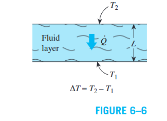
Case A — Convection
من Equation (6–6):
Case B — Conduction
من Equation (6–7):
Derivation of Nusselt Number
نقسم Heat Flux الناتج عن Convection على Heat Flux الناتج عن Conduction:
بإلغاء \(\Delta T\) من البسط والمقام:
إذًا:
في هذا الاشتقاق، \(L\) هو سمك الطبقة المستخدم في المقارنة. وعند تمثيل الحالة باستخدام Characteristic Length، تصبح العلاقة \(Nu=hL_c/k\).
النتيجة الأساسية: Nusselt Number يمثل نسبة Heat Transfer by Convection إلى Heat Transfer by Conduction عبر طبقة المائع نفسها، تحت المقارنة المحددة في المرجع.
- إذا كان \(Nu\) أكبر، فإن تأثير Convection في تعزيز انتقال الحرارة يكون أكبر.
- إذا كان \(Nu=1\)، فإن الحالة المقارنة تمثل انتقال الحرارة بالتوصيل فقط، وفقًا للتفسير الوارد في المرجع.
- \(Nu\) ليس Heat Transfer Rate نفسه؛ بل هو نسبة لا بُعدية تساعد على توصيف فاعلية انتقال الحرارة.
1.7.4 Historical Note — Wilhelm Nusselt
يذكر المرجع أن Wilhelm Nusselt كان مهندسًا ألمانيًا أسهم في تطوير دراسة Convective Heat Transfer في النصف الأول من القرن العشرين.
من أعماله المهمة ورقته المنشورة عام 1915 بعنوان The Basic Laws of Heat Transfer، والتي قدم فيها Dimensionless Groups المرتبطة بنظرية التشابه في انتقال الحرارة.
ويشير المرجع أيضًا إلى أعماله المتعلقة بـ Film Condensation of Steam، وانتقال الحرارة في الأنابيب، وHeat Exchangers، والعلاقة بين Heat Transfer وMass Transfer.
Practical Applications of Forced Convection
يقدم المرجع أمثلة يومية على Forced Convection:
- Cooling the Human Body: استخدام Fan يزيد حركة الهواء حول الجسم، فيساعد على زيادة Heat Transfer عندما تكون ظروف الحرارة تسمح بذلك.
- Cooling Hot Food: النفخ على الطعام الساخن يزيد حركة الهواء حوله، فيساعد على تبريده.
- Cooling Electronics: استخدام Fan داخل أجهزة الإلكترونيات يساعد على نقل الحرارة بعيدًا عن المكونات الساخنة.
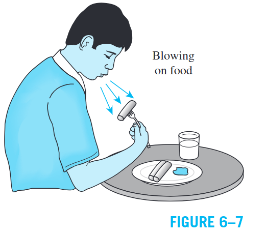
كما يوضح المرجع أن الهواء في يوم شتوي عاصف قد يجعلنا نشعر ببرودة أكبر؛ لأن حركة الهواء تؤثر في معدل انتقال الحرارة من الجسم إلى المحيط.
Solved Example 6–1
EXAMPLE 6–1 Heat Transfer Calculation from Temperature Profile
During the flow of air at \(T_\infty=20^\circ C\) over a plate surface maintained at a constant temperature of \(T_s=160^\circ C\), the dimensionless temperature profile within the air layer over the plate is determined to be
where \(a=3200\ \mathrm{m^{-1}}\) and \(y\) is the vertical distance measured from the plate surface in m (Fig. 6–8). Determine the heat flux on the plate surface and the convection heat transfer coefficient.
The thermal conductivity is evaluated at the film temperature.
- Determine the heat flux at the plate surface, \(\dot q''\).
- Determine the convection heat transfer coefficient, \(h\).
- The given nondimensional temperature profile is representative of the variation of temperature over the entire plate.
- Heat transfer by radiation is negligible.
The film temperature is
Substituting:
The thermal conductivity of air at \(90^\circ C\), obtained from Table A–15 as specified in the reference, is
Fourier’s law at the surface:
Newton’s law of cooling:
Therefore,
The given equation is
Multiplying both sides by \(T_s-T_\infty\):
Thus,
Differentiating with respect to \(y\):
At the plate surface, \(y=0\):
Since \(e^0=1\),
Substituting the numerical values:
Therefore,
Using Fourier’s law:
Substituting:
Hence,
From Newton’s law of cooling:
Substituting:
Therefore,
The temperature gradient at the surface is negative because the temperature decreases as the distance \(y\) from the hot plate increases. Fourier’s law includes a negative sign, so the resulting heat flux is positive in the direction from the plate into the air.
The convection coefficient can also be checked by substituting the results into Newton’s law of cooling:
The small difference from \(13547.52\ \mathrm{W/m^2}\) is due to rounding \(h\) to three significant figures.
The result is consistent with the calculated surface heat flux.
Classification of Fluid Flows
Convection heat transfer is closely related to Fluid Mechanics, which studies fluids at rest or in motion and their interactions with solid surfaces and other fluids. To simplify the analysis of different flow problems, fluid flows are classified according to their physical characteristics.
1. Viscous versus Inviscid Regions of Flow
Viscosity is the internal resistance of a fluid to motion and deformation. It results from cohesive forces between molecules in liquids and molecular collisions in gases.
- Viscous flow: Frictional effects are significant and must be considered.
- Inviscid flow region: Viscous forces are negligible compared with inertial or pressure forces, allowing the viscous terms to be neglected in the analysis.
كل الموائع الحقيقية لها viscosity، لكن تأثيرها مش بنفس الأهمية في كل مكان. عند سطح صلب، شرط No-Slip Condition يجعل سرعة المائع الملامس للسطح مساوية لسرعة السطح. لذلك، تتكون بالقرب منه منطقة تتأثر فيها السرعة بالـ viscosity، بينما بعيدًا عن السطح قد يصبح تأثيرها ضئيلًا.
Figure 6–9: The flow of an originally uniform fluid stream over a flat plate, showing viscous regions near the plate and inviscid regions farther away.
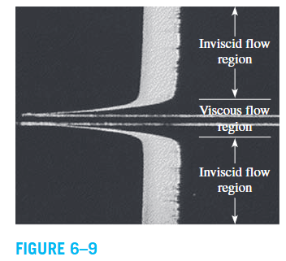
2. Internal versus External Flow
تصنيف المائع هنا يعتمد على ما إذا كان محصورًا داخل قناة أو يتحرك فوق سطح.
- Internal Flow: The fluid is completely bounded by solid surfaces, as in a pipe or duct.
- External Flow: The fluid flows over a surface while remaining unbounded, as in airflow over a ball, plate, wire, or exposed pipe.
- Open-Channel Flow: Liquid flows in a partially filled channel with a free surface, as in rivers and irrigation ditches.
في Internal Flow، تأثير الـ viscosity يمتد خلال مجال الجريان كله. أما في External Flow، فيتركز تأثيرها أساسًا داخل Boundary Layers القريبة من الأسطح، وكذلك في مناطق الـ Wake خلف الأجسام.
Figure 6–10: External flow over a tennis ball and the turbulent wake behind it.
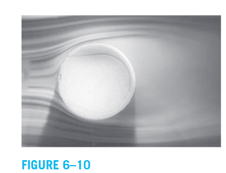
3. Compressible versus Incompressible Flow
التصنيف يعتمد على مقدار تغير Density \(\rho\) أثناء الجريان.
- Incompressible Flow: Density remains approximately constant throughout the flow.
- Compressible Flow: Density changes significantly during the flow.
Incompressibility is an approximation. When a flow is incompressible, the volume of each fluid portion remains unchanged during its motion.
عادةً ما تُعامل السوائل على أنها incompressible لأن كثافتها تتغير بدرجة صغيرة نسبيًا. يذكر المرجع أن زيادة الضغط إلى \(210\ \text{atm}\) تجعل كثافة الماء تتغير بنحو \(1\%\) مقارنةً بكثافته عند \(1\ \text{atm}\). أما الغازات فهي أكثر قابلية للانضغاط؛ فتغير الضغط بمقدار \(0.01\ \text{atm}\) قد يسبب تغيرًا في كثافة الهواء الجوي بمقدار \(1\%\).
For gas flows, the importance of compressibility is related to the Mach Number:
where:
- \(V\) = flow velocity.
- \(c\) = speed of sound.
- For air at room temperature and sea level, \(c=346\ \text{m/s}\).
According to the reference, gas flows can often be approximated as incompressible when density changes are below about \(5\%\), which is usually the case when:
Therefore, compressibility effects in air can often be neglected at velocities below approximately \(100\ \text{m/s}\). A gas flow is not necessarily compressible.
حتى لو كان تغير كثافة السائل صغيرًا، فقد يكون له تأثير مهم في بعض الحالات. مثال ذلك Water Hammer، الذي ينتج عن اهتزازات الأنابيب بسبب انعكاس موجات الضغط عند إغلاق الصمامات فجأة.
4. Laminar versus Turbulent Flow
- Laminar Flow: Highly ordered motion in which fluid particles move in smooth layers.
- Turbulent Flow: Highly disordered motion characterized by velocity fluctuations.
- Transitional Flow: A flow that alternates between laminar and turbulent behavior.
الـ Laminar Flow شائع في الموائع ذات اللزوجة العالية مثل الزيوت عند السرعات المنخفضة، بينما الـ Turbulent Flow شائع في الموائع منخفضة اللزوجة مثل الهواء عند السرعات العالية.
نوع الجريان يؤثر على القدرة المطلوبة لتشغيل المضخات؛ لأن طبيعة الحركة ومقاومة الجريان تختلف بين النظامين.
Figure 6–11: Laminar, transitional, and turbulent flows.
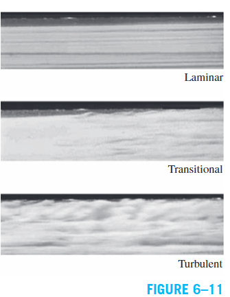
5. Natural versus Forced Flow
- Forced Flow: Fluid motion is initiated by external means such as a pump or fan.
- Natural Flow (Unforced Flow): Fluid motion results from natural effects such as buoyancy.
في Natural Convection، الهواء أو السائل الدافئ تكون كثافته أقل عادةً، فيرتفع، بينما يهبط المائع الأبرد والأعلى كثافة. هذه الحركة تنتج عن Buoyancy Effect دون الحاجة إلى مضخة أو مروحة.
مثال المرجع هو Thermosiphoning في أنظمة تسخين المياه بالطاقة الشمسية، حيث يوضع خزان المياه أعلى من مجمعات الطاقة الشمسية لتساعد حركة الطفو على تدوير الماء.
6. Steady versus Unsteady Flow
من المهم التمييز بين التغير مع الزمن والتغير من مكان إلى آخر.
- Steady Flow: Fluid properties at any fixed point do not change with time.
- Unsteady Flow: Fluid properties at a fixed point change with time.
- Uniform Flow: A property does not change with location over the specified region.
- Transient Flow: Often refers to a developing flow that has not yet reached its steady operating condition.
- Periodic Flow: An unsteady flow that oscillates about a steady mean.
Steady لا تعني أن خواص المائع متساوية في كل مكان؛ بل تعني أنها ثابتة مع الزمن عند النقطة نفسها. لذلك، يمكن أن يتغير الضغط أو السرعة من موضع إلى آخر في steady flow، بشرط ألا يتغيرا مع الزمن عند كل نقطة ثابتة.
في الأجهزة التي تعمل باستمرار، مثل Turbines, Pumps, Boilers, Condensers, and Heat Exchangers، يمكن غالبًا تقريب التشغيل على أنه steady flow.
أما الأجهزة الدورية، مثل Reciprocating Engines and Compressors، فقد يكون الجريان عند مداخلها ومخارجها متذبذبًا. ومع ذلك، يمكن تحليلها أحيانًا باستخدام قيم متوسطة زمنيًا للخواص.
7. One-, Two-, and Three-Dimensional Flows
يعتمد التصنيف على عدد الاتجاهات الأساسية التي تتغير فيها السرعة.
- One-Dimensional Flow: Velocity varies primarily in one spatial direction.
- Two-Dimensional Flow: Velocity varies primarily in two spatial directions.
- Three-Dimensional Flow: Velocity varies in three spatial directions.
يمكن تمثيل السرعة في الإحداثيات الديكارتية مثلًا على الصورة:
وفي الإحداثيات الأسطوانية:
قد يكون الجريان ثلاثي الأبعاد فعليًا، لكن إذا كان التغير في بعض الاتجاهات صغيرًا، يمكن إهماله للحصول على نموذج أحادي أو ثنائي الأبعاد أبسط.
Example: Flow Through a Circular Pipe
في منطقة دخول الأنبوب، يتطور توزيع السرعة ويتغير مع كل من \(r\) و\(z\)، لذلك يكون الجريان Two-Dimensional في الإحداثيات الأسطوانية:
بعد مسافة من المدخل، يتطور توزيع السرعة بالكامل ويصبح غير متغير في اتجاه الجريان. عندها يكون الجريان Fully Developed، ويمكن وصفه بالعلاقة:
يذكر المرجع أن الجريان المضطرب في الأنبوب يصبح fully developed بعد مسافة تقارب عشرة أقطار للأنبوب، بينما تكون المسافة أقل في الجريان الصفحي.
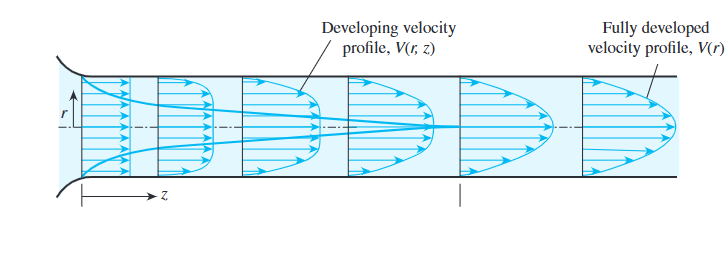
ملاحظة مهمة: dimensionality تعتمد أيضًا على اختيار نظام الإحداثيات؛ فالجريان داخل الأنبوب قد يوصف بأنه one-dimensional في cylindrical coordinates، لكنه two-dimensional في Cartesian coordinates.
Velocity Boundary Layer
عندما يتحرك مائع بسرعة منتظمة فوق Flat Plate، تتكون منطقة قريبة من السطح تتأثر فيها السرعة بلزوجة المائع.
نختار الإحداثيات كما يلي:
- \(x\): Along the plate, measured from the leading edge.
- \(y\): Normal to the plate surface.
- \(V\): Free-stream velocity.
- \(u\): Local velocity component parallel to the plate.
بعيدًا عن السطح، تكون سرعة المائع تقريبًا مساوية للسرعة الحرة \(V\). أما عند السطح نفسه، فإن No-Slip Condition تجعل السرعة النسبية بين المائع والسطح تساوي صفرًا.
تنتقل آثار الاحتكاك من الطبقة الملامسة للسطح إلى الطبقات المجاورة، فتتغير السرعة من الصفر عند الجدار إلى قيمة تقترب من \(V\) بعيدًا عنه.
Velocity Boundary Layer هي منطقة الجريان التي يكون فيها تأثير قوى القص اللزجة وتغير السرعة مهمًا.
ويعرّف المرجع سمك طبقة السرعة \(\delta\) بأنه المسافة من السطح التي تصبح عندها:
وبالتالي، خارج هذه الطبقة تكون السرعة تقريبًا مساوية للسرعة الحرة، ويصبح تأثير الاحتكاك مهملًا نسبيًا.
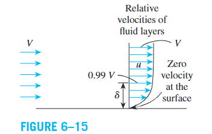
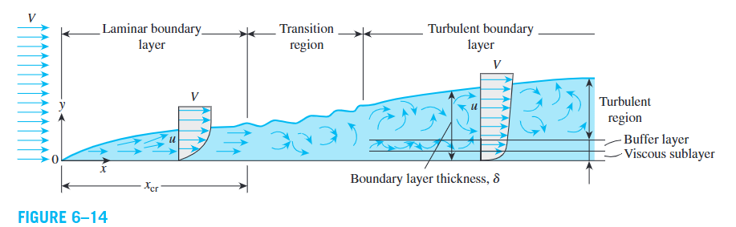
Wall Shear Stress
عندما يتحرك المائع فوق سطح، تؤثر قوى الاحتكاك بين طبقات المائع، وكذلك بين المائع والسطح. تسمى Friction Force per Unit Area بـ Shear Stress ويرمز لها بـ \(\tau\).
للموائع النيوتونية، يعبر المرجع عن إجهاد القص عند الجدار بالعلاقة:
where:
- \(\tau_w\) = Wall shear stress, \(\text{N/m}^2\).
- \(\mu\) = Dynamic viscosity, \(\text{kg/(m·s)}\).
- \(\left(\frac{\partial u}{\partial y}\right)_{y=0}\) = Velocity gradient at the wall.
الـ Velocity Gradient يقيس مدى تغير السرعة بين الطبقات المتجاورة. كلما زاد تغير السرعة بالنسبة للمسافة العمودية على السطح، زاد إجهاد القص عند الجدار، مع ثبات اللزوجة.
Newtonian Fluids هي الموائع التي يتناسب فيها إجهاد القص خطيًا مع تدرج السرعة. من أمثلتها الماء والهواء والبنزين والزيوت الشائعة. أما الدم والبلاستيك السائل فمن أمثلة الموائع غير النيوتونية. يقتصر هذا الكتاب على دراسة الموائع النيوتونية.
Dynamic and Kinematic Viscosity
Dynamic Viscosity \(\mu\) measures a fluid's resistance to deformation. وحداته المكافئة كما يذكر المرجع هي:
كما يعرّف Kinematic Viscosity بالرمز \(\nu\):
where \(\rho\) is fluid density. ووحدات \(\nu\) تشمل \(\text{m}^2/\text{s}\).
اللزوجة تتأثر بدرجة الحرارة، لكن سلوك السوائل يختلف عن الغازات:
- Liquids: Viscosity generally decreases as temperature increases.
- Gases: Viscosity generally increases as temperature increases.
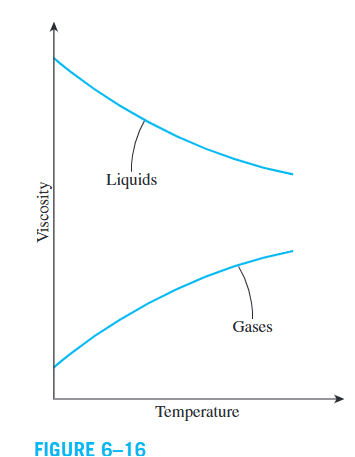
يحتوي Table 6–1 في المرجع على قيم اللزوجة الديناميكية لبعض الموائع عند \(1\ \text{atm}\) و\(20^\circ C\)، إلا إذا ذُكرت درجة حرارة أخرى. فيما يلي أمثلة من الجدول:
| Fluid | Dynamic viscosity \(\mu\) (kg/m·s) |
|---|---|
| Glycerin at \(20^\circ C\) | 1.52 |
| Engine oil SAE 10W | 0.10 |
| Mercury | 0.0015 |
| Ethyl alcohol | 0.0012 |
| Water at \(20^\circ C\) | 0.0010 |
| Air | 0.000018 |
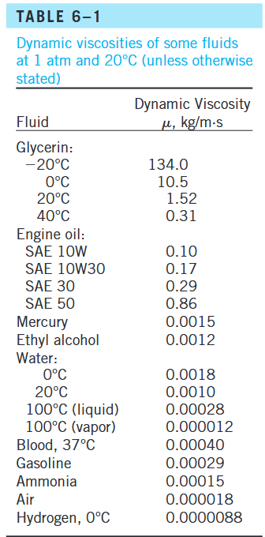
Skin Friction Coefficient
بدلًا من حساب إجهاد القص من توزيع السرعة مباشرةً، يمكن في الجريان الخارجي ربطه بسرعة الجريان الحر باستخدام Skin Friction Coefficient \(C_f\):
حيث \(C_f\) معامل لا بُعدي، وتُحدد قيمته غالبًا تجريبيًا، وقد تتغير على طول السطح.
إذا توفر متوسط معامل الاحتكاك على السطح، فإن قوة الاحتكاك الكلية تُحسب من:
where \(A_s\) is the surface area.
معامل الاحتكاك مهم في دراسات انتقال الحرارة؛ لأنه يرتبط مباشرةً بمعامل انتقال الحرارة وبمتطلبات القدرة اللازمة لتشغيل المضخات أو المراوح.
Thermal Boundary Layer
كما تتكون Velocity Boundary Layer بسبب اختلاف السرعة عند السطح، تتكون Thermal Boundary Layer عندما يتدفق مائع بدرجة حرارة تختلف عن درجة حرارة السطح.
لنفترض أن مائعًا بدرجة حرارة منتظمة \(T_\infty\) يتدفق فوق صفيحة ذات درجة حرارة ثابتة \(T_s\). المائع الملامس للسطح يصل إلى الاتزان الحراري معه، فتكون درجة حرارته \(T_s\). ثم تنتقل الطاقة بين هذه الطبقة والطبقات المجاورة، ويتكون توزيع لدرجة الحرارة يمتد من \(T_s\) عند السطح إلى \(T_\infty\) بعيدًا عنه.
Thermal Boundary Layer هي منطقة الجريان التي يكون فيها تغير درجة الحرارة في الاتجاه العمودي على السطح ملحوظًا.
يعرّف المرجع سمك الطبقة الحرارية \(\delta_t\) بأنه المسافة من السطح التي عندها:
وعند هذه النقطة تصبح درجة الحرارة قريبة من درجة حرارة المائع الحر. هذا التعريف مماثل لتعريف سمك طبقة السرعة باستخدام \(u=0.99V\).
Thermal Boundary Layer Development and Heat Transfer
سمك الطبقة الحرارية يزداد في اتجاه الجريان؛ لأن تأثير انتقال الحرارة يصل إلى مسافات أبعد عن السطح كلما تقدم المائع على طول الصفيحة.
معدل انتقال الحرارة بالحمل عند أي نقطة يرتبط مباشرةً بـ Temperature Gradient عند تلك النقطة. لذلك، شكل توزيع درجة الحرارة داخل الطبقة الحرارية يؤثر في مقدار Convection Heat Transfer بين السطح والمائع.
عندما يتدفق مائع فوق سطح ساخن أو بارد، تتكون Velocity Boundary Layer وThermal Boundary Layer في الوقت نفسه. ولأن سرعة المائع تؤثر بقوة في توزيع درجة الحرارة، فإن التطور النسبي لطبقة السرعة مقارنةً بالطبقة الحرارية يؤثر بشكل مهم في انتقال الحرارة بالحمل.
Heat and Momentum Transfer in Turbulent Flow
في الـ Turbulent Flow حركة المائع مش منتظمة؛ فيه fluctuations عشوائية في السرعة ودرجة الحرارة، فبتنتقل مجموعات من جزيئات المائع (الـ Turbulent Eddies) بين مناطق مختلفة. النتيجة إنها بتنقل:
- Momentum بين طبقات المائع، فترفع الـ shear stress.
- Thermal Energy بين مناطق مختلفة الحرارة، فتعزز الـ heat transfer.
- Mass بين مناطق المائع.
في الـ time-averaged stationary turbulent flow متوسط الخواص عند نقطة ثابتة لا يتغير مع الزمن، لكن السرعة اللحظية تظل تتذبذب حول المتوسط.
6–6.1 Mean Velocity and Fluctuations
نكتب الخواص اللحظية على الصورة:
والمتوسط الزمني للتذبذب نفسه يساوي صفرًا:
لكن متوسط حاصل ضرب تذبذبين مش لازم يساوي صفرًا، مثلًا \(\overline{u'v'}\ne 0\). وده مهم جدًا لأن التفاعل بين تذبذبات السرعة في الاتجاهين \(x\) و\(y\) هو اللي يسمح بانتقال صافٍ للـ momentum رغم إن متوسط كل fluctuation منفردًا صفر.
6–6.2 Turbulent Shear Stress
Not Required for the Exam — Included for Understanding
تخيل جزيئات مائع بتتحرك لأعلى من طبقة سرعتها الأفقية أقل إلى طبقة سرعتها أعلى؛ بتنقل momentum معها فتؤثر في السرعة المتوسطة للطبقة اللي وصلت لها. معدل انتقال الكتلة خلال مساحة تفاضلية \(dA\):
والقوة المؤثرة في الطبقة نتيجة هذا الانتقال (حسب اشتقاق الكتاب):
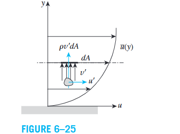
بقسمة القوة على المساحة، ثم أخذ المتوسط الزمني لأننا نحلل جريانًا متوسطًا زمنيًا:
الإشارة السالبة ناتجة عن اتجاه انتقال الـ momentum في هذا التصور، والكتاب يذكر أن \(\overline{u'v'}\) غالبًا سالبة تجريبيًا. الاستنتاج: حتى لو كان متوسط \(u'\) و\(v'\) صفرًا، فمتوسط حاصل ضربهما غير صفري، فينتج turbulent shear stress.
6–6.3 Turbulent Heat Flux
Not Required for the Exam — Included for Understanding
الـ enthalpy لكل وحدة كتلة مع ثبات \(c_p\) هي \(h=c_pT\). المائع المتحرك في اتجاه \(y\) بسرعة \(v'\) ويحمل انحراف حرارة \(T'\) ينقل طاقة حرارية، فيكتب الكتاب:
أي إن المائع المتحرك لأعلى أو لأسفل يحمل طاقته الحرارية، وده يعزز انتقال الحرارة بالإضافة إلى Molecular Heat Conduction.
6–6.4 Eddy Viscosity and Eddy Thermal Conductivity
Not Required for the Exam — Included for Understanding
بما إن انتقال الـ momentum والحرارة بالـ eddies يشبه تأثير اللزوجة والتوصيل الجزيئيين، نمثلهما بعلاقات مشابهة (معادلة الكتاب 6–15):
- \(\mu_t\): Turbulent (Eddy) Viscosity.
- \(k_t\): Turbulent (Eddy) Thermal Conductivity.
لاحظ إن \(\mu_t\) و\(k_t\) مش خواص ثابتة للمائع مثل \(\mu\) و\(k\)؛ بل يعتمدان على ظروف الجريان.
6–6.5 Total Shear Stress and Total Heat Flux
إجمالي الـ shear stress = جزء لزج + جزء مضطرب، وبنفس الفكرة إجمالي الحرارة = molecular conduction + turbulent transport (مع مراعاة convention الإشارة في الكتاب):
حيث \(\nu_t=\mu_t/\rho\) هي Kinematic Eddy Viscosity (Eddy Diffusivity of Momentum) و\(\alpha_t=k_t/(\rho c_p)\) هي Eddy Thermal Diffusivity (Eddy Diffusivity of Heat).
6–6.6 Behavior Near the Wall
- في الـ core region حركة الـ eddies قوية، فقد تكون الـ eddy diffusivities أكبر بكثير من الجزيئية.
- بالقرب من الجدار تقل شدة حركة الـ eddies بسبب No-Slip؛ وحسب الكتاب تتناقص الـ eddy diffusivities باتجاه الجدار وتساوي صفرًا عنده.
- داخل الطبقة الرقيقة القريبة من الجدار تكون الـ gradients شديدة الانحدار.
لذلك قد يكون wall shear stress وwall heat flux أكبر في الـ turbulent flow منهما في الـ laminar رغم أن الـ turbulent boundary layer أكثر سُمكًا.
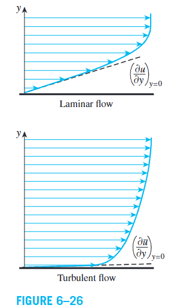
| Quantity | Depends on |
|---|---|
| Molecular diffusivities \(\nu,\alpha\) | Fluid properties |
| Eddy diffusivities \(\nu_t,\alpha_t\) | Flow conditions |
Derivation of Differential Convection Equations
ملاحظة: الكتاب يوضح إن هذا القسم والأقسام النظرية التالية يمكن تخطيها أو الرجوع إليها كمرجع. الاشتقاقات هنا لفهم أصل المعادلات؛ تأكد من مدرس المادة بشأن المطلوب في الامتحان.
6–7.1 Assumptions and Differential Control Volume
ندرس مائعًا يتحرك فوق سطح مستوٍ: \(x\) موازٍ للسطح واتجاه الجريان، و\(y\) عمودي عليه، بعمق وحدة في اتجاه \(z\). حجم العنصر \(dV=dx\,dy(1)\) وكتلته:
نفترض جريانًا Steady, Two-Dimensional، ومائعًا Newtonian بخواص ثابتة، \(u=u(x,y)\)، \(v=v(x,y)\). نستخدم: Conservation of Mass، وNewton’s Second Law، وConservation of Energy.
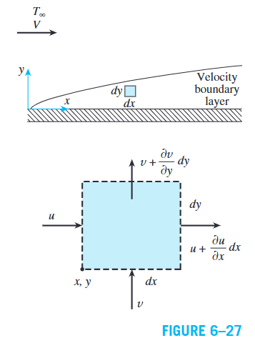
6–7.2 Continuity Equation
الكتلة لا تُخلق ولا تفنى؛ وفي الـ steady flow الكتلة الداخلة تساوي الخارجة:
في اتجاه \(x\):
وبالمثل في اتجاه \(y\): الداخل \(\rho v\,dx(1)\) والخارج \(\rho\left(v+\frac{\partial v}{\partial y}dy\right)dx(1)\). بالموازنة:
نحذف الحدود المشتركة ونقسم على \(\rho\,dx\,dy\):
إذا زادت سرعة المائع في اتجاه \(x\) عبر العنصر فلا بد من تغير مناسب في \(v\) لتحقق حفظ الكتلة. الصيغة تخص steady, two-dimensional flow with constant density.
6–7.3 Momentum Equations
نطبق قانون نيوتن الثاني على العنصر، مع قوى سطحية (ضغط وإجهادات لزجة) وقوى جسمية (مثل الجاذبية):
لأن \(u=u(x,y)\)، التغير الكلي هو \(du=\frac{\partial u}{\partial x}dx+\frac{\partial u}{\partial y}dy\) (6–25). بالقسمة على \(dt\) مع \(dx/dt=u\) و\(dy/dt=v\):
لماذا يوجد acceleration في steady flow؟ Steady معناها فقط إن الخواص عند نقطة ثابتة لا تتغير مع الزمن (\(\partial u/\partial t=0\))، لكن السرعة قد تختلف من نقطة لأخرى (\(\partial u/\partial x\ne0\) أو \(\partial u/\partial y\ne0\)). مثال الكتاب: Garden Hose Nozzle؛ الجريان ثابت مع الزمن لكن الماء يتسارع مكانيًا أثناء مروره بالفوهة.
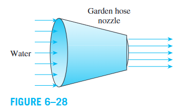
X-Momentum Equation
نهمل الإجهادات اللزجة العمودية. صافي قوة القص \(\frac{\partial\tau}{\partial y}dy\,dx(1)\)، وصافي قوة الضغط \(-\frac{\partial P}{\partial x}dx\,dy(1)\). وللمائع Newtonian \(\tau=\mu\,\partial u/\partial y\):
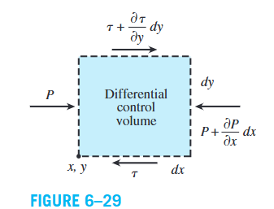
بالتعويض في \(dm\,a_x=F_{\text{surface},x}\) والقسمة على \(dx\,dy(1)\):
- الطرف الأيسر: تأثير حركة المائع وتسارعه.
- \(\mu\,\partial^2u/\partial y^2\): تأثير اللزوجة وتوزيع القص.
- \(-\partial P/\partial x\): تأثير تغير الضغط في اتجاه الجريان.
لو وُجدت قوة جسمية في اتجاه \(x\) تُضاف للطرف الأيمن لكل وحدة حجم.
6–7.4 Boundary Layer Approximations
Not Required for the Exam — Included for Understanding
داخل الـ boundary layer تتغير السرعة من صفر عند الجدار إلى قيمة قريبة من free stream خلال مسافة عمودية صغيرة، فالتغيرات العمودية أكبر عادةً من الموازية للسطح. الافتراضات كما في الكتاب (Fig. 6–30):
ويشير الكتاب أيضًا إلى إهمال مشتقات \(v\) في هذا التقريب. ولاحظ أن \(\partial v/\partial y=-\partial u/\partial x\) من الـ continuity (6–21)، فاعتبرها صغيرة نسبيًا وليست صفرًا فعليًا.
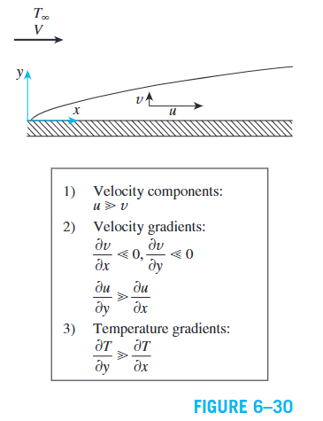
6–7.5 Y-Momentum Equation and the Flat-Plate Pressure
Not Required for the Exam — Included for Understanding
عند تطبيق قانون نيوتن في الاتجاه \(y\)، مع إهمال الجاذبية وباستخدام تقريبات الـ boundary layer:
أي إن الضغط لا يتغير ملحوظًا عبر الـ boundary layer ويساوي ضغط الـ free stream عند الموضع نفسه. وفي الـ free stream فوق flat plate: \(u=V=\text{constant}\) و\(v=0\)، فتؤول (6–28) إلى \(\partial P/\partial x=0\)؛ أي الضغط ثابت على طول السطح في هذه الحالة.
6–7.6 Conservation of Energy Equation
في الـ steady flow لا تتغير الطاقة المخزنة، فنكتب \(\dot E_{\text{in}}-\dot E_{\text{out}}=0\)، والطاقة تنتقل بالحرارة والشغل والكتلة:
الطاقة لكل وحدة كتلة \(e_{\text{stream}}=h+ke+pe\) حيث \(ke=(u^2+v^2)/2\) و\(pe=gz\). يهمل الكتاب \(ke\) و\(pe\) مقارنةً بـ \(h\) مع ثبات الخواص، فـ \(e_{\text{stream}}=h=c_pT\) (تبسيط خاص بافتراضات الاشتقاق وليس قاعدة عامة).
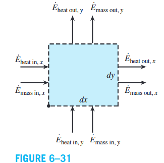
Energy Transport by Mass
Not Required for the Exam — Included for Understanding
في اتجاه \(x\) (بثبات \(\rho,c_p\)):
وبنفس الطريقة في اتجاه \(y\)، ثم نجمع ونستخدم الـ continuity (6–21) فيختفي الحد الذي يحتوي \(T\):
Heat Conduction Terms
Not Required for the Exam — Included for Understanding
من قانون فورييه \(\dot q_x=-k\,\partial T/\partial x\) والمساحة \(dy(1)\): الفرق بين الحرارة الداخلة والخارجة \(-\frac{\partial\dot Q_x}{\partial x}dx\)، أي:
وبالمثل في \(y\)، فيكون صافي التوصيل:
Differential Energy Equation
Not Required for the Exam — Included for Understanding
مع إهمال الـ viscous dissipation وشغل قوى القص: \(\dot E_{\text{mass,net}}+\dot Q_{\text{cond,net}}=0\). بالتعويض من (6–32) و(6–34) والقسمة على \(dx\,dy\):
الطرف الأيسر: نقل الطاقة بحركة المائع (convective transport)، والأيمن: thermal conduction. المعادلة لا تفصل الظاهرتين، بل توضح كيف تتوازن مساهماتهما.
Viscous Dissipation
أحيانًا تتحول الطاقة الميكانيكية إلى حرارية بتأثير اللزوجة (Viscous Dissipation). عند أخذها في الاعتبار:
يكون مهمًا في high-speed flows وفي الموائع عالية اللزوجة مثل الزيت في journal bearings، حيث قد ترتفع درجة حرارة المائع بوضوح.
Special Case: Stationary Fluid
إذا كان المائع ساكنًا (\(u=v=0\)) وبإهمال الـ viscous dissipation وبدون توليد حراري داخلي، تؤول (6–35) إلى معادلة التوصيل الحراري الثنائية الأبعاد المستقرة:
Solved Example 6–2
The flow of oil in a journal bearing can be approximated as parallel flow between two large plates with one plate moving and the other stationary. Such flows are known as Couette flow. Consider two large isothermal plates separated by 2-mm-thick oil film. The upper plate moves at a constant velocity of 12 m/s, while the lower plate is stationary. Both plates are maintained at 20°C. (a) Obtain relations for the velocity and temperature distributions in the oil. (b) Determine the maximum temperature in the oil and the heat flux from the oil to each plate (Fig. 6–32).
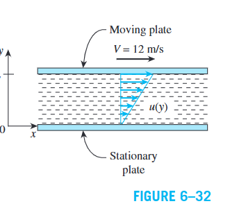
- Velocity distribution \(u(y)\).
- Temperature distribution \(T(y)\).
- Maximum oil temperature.
- Heat flux from the oil to each plate.
- Steady operating conditions.
- Incompressible oil with constant properties.
- Negligible body forces.
- Large plates, so there is no variation in the \(z\)-direction.
Parallel flow gives \(v=0\); continuity then gives \(\partial u/\partial x=0\), so \(u=u(y)\). With \(\partial P/\partial x=0\) the \(x\)-momentum equation reduces to \(\mu\,d^2u/dy^2=0\). Integrating twice, \(u=C_1y+C_2\). No-slip: \(u(0)=0\Rightarrow C_2=0\); \(u(L)=V\Rightarrow C_1=V/L\).
Viscous dissipation is significant (viscous oil, high velocity) and \(T=T(y)\), so (6–36) reduces to \(0=k\,d^2T/dy^2+\mu(du/dy)^2\) with \(du/dy=V/L\):
Applying \(T(0)=T(L)=T_0\):
Setting \(dT/dy=\frac{\mu V^2}{2kL}\left(1-\frac{2y}{L}\right)=0\) gives \(y=L/2\); the maximum is at the midpoint because both plates are at the same temperature.
From Fourier’s law \(\dot q''=-k\,dT/dy\):
The magnitudes are equal and the signs opposite because the heat generated in the oil flows to both plates; the signs depend on the chosen positive \(y\)-direction.
- The oil temperature rises about \(104^\circ\text{C}\) above the plates, so viscous dissipation is significant.
- The mechanical energy dissipated by friction is converted to heat at \(60.2\ \text{kW/m}^2\) of plate area, equal to the combined heat transfer to the two plates.
- Properties were taken at \(20^\circ\text{C}\) although \(T_{\max}\) is much higher; since oil viscosity depends strongly on temperature, the textbook recommends repeating the calculation at the average temperature of \(72^\circ\text{C}\).
Solutions of Convection Equations for a Flat Plate
نعتبر جريانًا steady laminar فوق flat plate: \(x\) من الحافة الأمامية، \(y\) عمودي على السطح، والسرعة الحرة \(V\). مع إهمال الـ viscous dissipation تؤول المعادلات (لمائع غير قابل للانضغاط بخواص ثابتة) إلى:
الشروط الحدية:
أول معادلتين تعطيان مجال السرعة، ثم يُستخدم في معادلة الطاقة لإيجاد توزيع الحرارة.
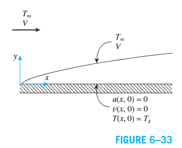
6–8.1 The Blasius Solution
في 1908 حل H. Blasius (تلميذ L. Prandtl) معادلات الـ laminar flat-plate boundary layer بتحويل التشابه (similarity transformation): شكل \(u/V\) متقارب عند المواضع المختلفة بدلالة مسافة لا بُعدية مناسبة.
ندخل الـ stream function \(\psi\) (تحقق الـ continuity تلقائيًا لأن \(\partial^2\psi/\partial x\partial y-\partial^2\psi/\partial y\partial x=0\)) والدالة اللا بُعدية \(f\):
التعويض في معادلة الـ momentum يعطي معادلة Blasius:
الشرط الأول: لا تدفق عبر الجدار، الثاني: no-slip، الثالث: اقتراب السرعة من القيمة الحرة بعيدًا عن الجدار. لا يوجد حل مغلق بدوال أولية؛ حلها Blasius أصلًا بمتسلسلة قوى، وتتوفر حلول عددية أدق.
6–8.2 Velocity Boundary-Layer Thickness
عند \(u/V=0.99\) يعطي الجدول \(\eta=4.91\)، ومن (6–43):
- \(\delta\) تزداد مع \(x\) ومع \(\nu\)، وتقل مع زيادة \(V\).
6–8.3 Wall Shear Stress and Skin-Friction Coefficient
من \(\tau_w=\mu\,(\partial u/\partial y)_{y=0}\) (6–52) ومع \(f''(0)=0.332\):
إذن \(\tau_w\) و\(C_{f,x}\) يتناقصان مع المسافة من الحافة الأمامية بنسبة \(x^{-1/2}\) في الشروط المذكورة.
6–8.4 Energy Equation and Temperature Distribution
لسطح بدرجة حرارة ثابتة نعرّف:
وبأخذ \(\theta=\theta(\eta)\) بنفس متغير التشابه:
هذه المعادلة أيضًا تحتاج حلًا عدديًا في الحالة العامة.
6–8.5 Special Case \(Pr=1\) and the Nusselt Number
عند \(Pr=1\) تتطابق (6–58) مع معادلة Blasius عند استبدال \(\theta\) بـ \(df/d\eta=u/V\) والشروط الحدية متطابقة، إذن للجريان الصفحي بخواص ثابتة فوق لوح متساوي الحرارة:
أي إن توزيعي السرعة والحرارة اللا بُعديين ينطبقان، وللطبقتين نفس الشكل، و\(d\theta/d\eta|_{0}=f''(0)=0.332\).
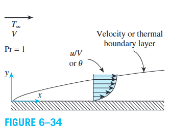
أما لـ \(Pr>0.6\) فيعطي الكتاب العلاقة العامة، ثم نستخدم قاعدة السلسلة:
ومن قانون فورييه وقانون نيوتن للتبريد:
ويرتبط سمك الطبقة الحرارية تقريبيًا بسمك طبقة السرعة بـ \(\delta_t\approx\delta/Pr^{1/3}\):
تنطبق هذه العلاقات على الجريان الصفحي فوق لوح متساوي الحرارة تحت افتراضات الاشتقاق. وللخواص المتغيرة يوصي الكتاب بحسابها عند film temperature \(T_f=(T_s+T_\infty)/2\).
Table 6–3: Similarity Function \(f\) and Its Derivatives for Laminar Boundary Layer Along a Flat Plate
| \(\eta\) | \(f\) | \(df/d\eta=u/V\) | \(d^2f/d\eta^2\) |
|---|---|---|---|
| 0 | 0 | 0 | 0.332 |
| 0.5 | 0.042 | 0.166 | 0.331 |
| 1 | 0.166 | 0.330 | 0.323 |
| 1.5 | 0.370 | 0.487 | 0.303 |
| 2 | 0.650 | 0.630 | 0.267 |
| 2.5 | 0.996 | 0.751 | 0.217 |
| 3 | 1.397 | 0.846 | 0.161 |
| 3.5 | 1.838 | 0.913 | 0.108 |
| 4 | 2.306 | 0.956 | 0.064 |
| 4.5 | 2.790 | 0.980 | 0.034 |
| 5 | 3.283 | 0.992 | 0.016 |
| 5.5 | 3.781 | 0.997 | 0.007 |
| 6 | 4.280 | 0.999 | 0.002 |
| \(\infty\) | \(\infty\) | 1 | 0 |
كلما زادت \(\eta\) بعيدًا عن الجدار يقترب \(u/V\) من 1 (السرعة الحرة)، وعند الجدار \(u/V=0\) تماشيًا مع شرط الـ no-slip.
Nondimensionalized Convection Equations and Similarity
المعادلات الحاكمة تحوي كميات ذات أبعاد (طول، سرعة، ضغط، حرارة، لزوجة، انتشارية حرارية). الـ Nondimensionalization يعبر عنها كنسب إلى مقاييس مرجعية، فيقلل عدد المعاملات المستقلة ويسهل المقارنة بين الموائع والسرعات والأشكال الهندسية. لسطح مستوٍ يعرّف الكتاب:
حيث \(L\) الطول المميز (طول اللوح) و\(V\) السرعة المرجعية (الحرة). مقياس الضغط \(\rho V^2\) يساوي ضعف الضغط الديناميكي الحر \(\rho V^2/2\).
6–9.1 Dimensionless Governing Equations
بعد التعويض والتبسيط:
والشروط الحدية اللا بُعدية:
6–9.2 Reynolds and Prandtl Numbers as Similarity Parameters
المسألة الأصلية فيها ستة معاملات: \(L,V,T_\infty,T_s,\nu,\alpha\). بعد الـ nondimensionalization تعتمد المعادلات على معاملين أساسيين:
- Reynolds number \(Re_L\): النسبة بين تأثير القصور الذاتي والتأثير اللزج.
- Prandtl number \(Pr\): النسبة بين انتشارية الـ momentum والانتشارية الحرارية.
هذا هو مبدأ التشابه (similarity): ظاهرتان متشابهتان عندما يكون لهما نفس الصورة اللا بُعدية للمعادلات والشروط الحدية (ونفس الهندسة). فبدل تجربة لكل مائع وسرعة وطول ودرجة حرارة، تُنظم النتائج بمجموعات لا بُعدية مثل \(Re\) و\(Pr\) و\(Nu\)، فيقل عدد التجارب.
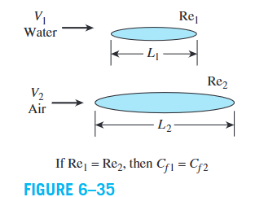
Figure 6–42: صورة مرفقة (هواء عند \(20^\circ\text{C}\) و\(7\ \text{m/s}\) فوق لوح رأسي \(L=3\ \text{m}\)) تخص مسألة لم يُرسل نصها مع هذه الدفعة؛ وُضعت هنا كما وردت لحين إرسال المسألة.
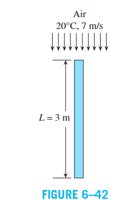
Microscale Heat Transfer
عندما يصبح Mean Free Path (MFP) \(\lambda\) للغاز (متوسط المسافة بين تصادمين متتاليين) مقارنًا بالطول المميز للجهاز، قد يفقد افتراض الـ Continuum دقته. المعيار هو Knudsen Number:
ويذكر النص حدًا تقريبيًا مرتبطًا بـ \(Kn\approx0.001\). عند المقاييس الصغيرة جدًا قد تعتمد الخواص الحرارية على البنية المجهرية ولا يعود انتقال الحرارة موصوفًا بنموذج محلي بسيط، فتظهر تأثيرات Nonlocal Heat Transfer.
Phonons and Heat Conduction in Solids
نموذج Fourier التقليدي لا يصف بعض مظاهر انتقال الحرارة غير المحلي في المقاييس النانوية، فتُستخدم نماذج أخرى منها Phonons: الذرات في الصلب مرتبطة في شبكة منتظمة (Atomic Lattice)، واهتزازاتها الجماعية تكوّن أنماطًا موجية تنقل الطاقة، وتمتلك خصائص شبيهة بالجسيمات (Wave–Particle Duality). تؤثر الـ phonons في Thermal وElectrical Conductivity، وفي العوازل الكهربائية هي الآلية الأساسية لانتقال الحرارة بالتوصيل.
Temperature Jump at the Wall
في التطبيقات التقليدية نفترض أن درجة حرارة الجدار تساوي درجة حرارة المائع الملاصق، لكن عند فقدان افتراض الـ Continuum يظهر فرق عند الجدار يسمى Temperature Jump: \(T_g\ne T_w\) حيث \(T_g\) حرارة الغاز الملاصق للجدار و\(T_w\) حرارة الجدار. لذلك قد يحتاج قانون نيوتن للتبريد إلى تعديل في التطبيقات الميكروسكوبية. ويعرض الكتاب علاقة von Smoluchowski (1898):
- \(\sigma_T\): Thermal Accommodation Coefficient (يرتبط بالكسر الجزيئي المنعكس انعكاسًا منتشرًا عن السطح).
- \(\gamma\): Specific Heat Ratio، \(Pr\): Prandtl Number، \(\lambda\): Mean Free Path.
- \((\partial T/\partial y)_w\): Temperature Gradient at the Wall.
فرق الحرارة يرتبط بتدرج الحرارة عند السطح وبالمسار الحر وبخواص الغاز وتفاعله مع الجدار. المرجع يعرض المعادلة مباشرةً بدون اشتقاق، فتُكتب كما وردت.
ثم يعرض الكتاب علاقة انتقال الحرارة عند الجدار:
تنبيه: رموز المعادلتين (6–84) و(6–85) في النص المُرسل متأثرة بتشوهات OCR، وأُعيد تنسيقهما وفق القراءة الأقرب. طابق الرموز والمعاملات مع صفحة الكتاب الأصلية قبل استخدام (6–85) في حسابات عددية؛ ولم يُقدَّم إثبات لها في المصدر.
Application: Fluid-Thermal Characteristics Inside a Microchannel
يعرض الكتاب (Fig. 6–44) توزيع درجة الحرارة وعدد ماخ (Mach Number) في قناة ميكروسكوبية عرضها \(H=1.2\ \text{mm}\) لتدفق فوق صوتي (Supersonic) لغازين، بمحاور لا بُعدية \(x/H\) و\(y/H\): (a),(b) النيتروجين، و(c),(d) الهيليوم.
Nitrogen: \(Kn=0.062\)، \(T_w=323\ \text{K}\) بينما \(T_g\approx510\ \text{K}\)، وهو temperature jump كبير. انتقال الحرارة من الغاز إلى الجدار يقلل Mach Number لكن يبقى التدفق فوق صوتي.
Helium: \(Kn=0.14\)، \(T_w=298\ \text{K}\) و\(T_g\) حتى نحو \(586\ \text{K}\). ينتج wall heat flux مرتفع جدًا قد يصعب بلوغه في المقاييس الماكروسكوبية، وهو كافٍ لإحداث Flow Choking: لا يستطيع معدل التدفق الكتلي الاستجابة بالطريقة المعتادة لمزيد من خفض الضغط downstream ضمن شروط الاختناق.
| Parameter | Nitrogen | Helium |
|---|---|---|
| Knudsen Number, \(Kn\) | 0.062 | 0.14 |
| Wall Temperature, \(T_w\) | 323 K | 298 K |
| Adjacent Gas Temperature, \(T_g\) | ≈ 510 K | up to 586 K |
| Effect on Flow | Mach number decreases; flow remains supersonic | Heat transfer is sufficient to choke the flow |
إذن انتقال الحرارة في القنوات الميكروسكوبية لا يؤثر في درجة الحرارة فقط، بل في خصائص التدفق وسرعته، وقد يسبب اختناقه في ظروف معينة.